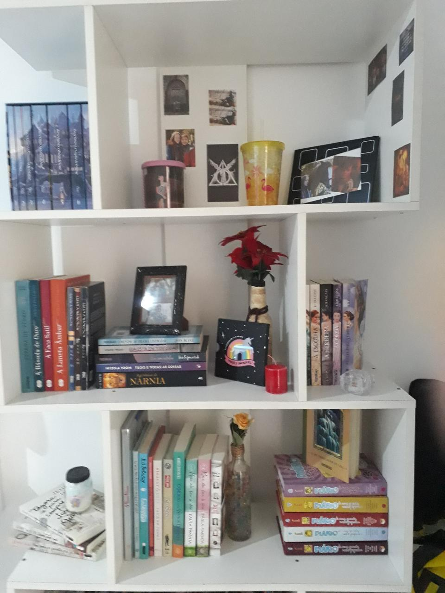
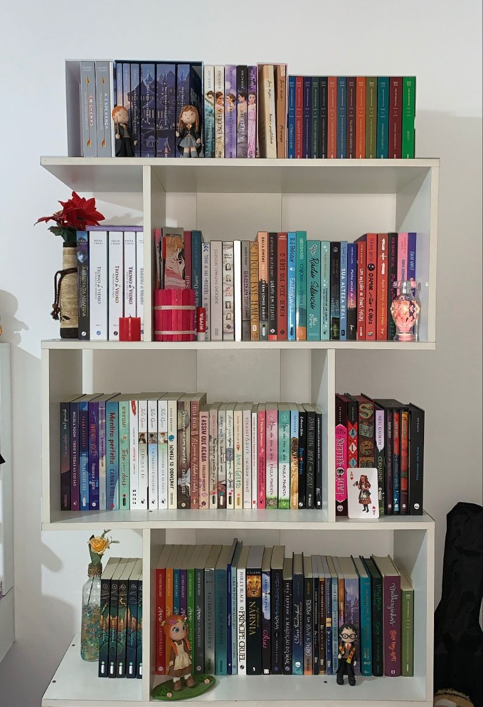
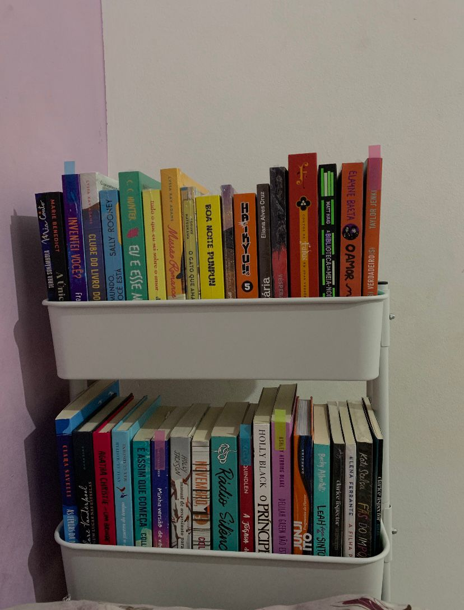

Meu nome é Eduarda Mori Almeida, eu tenho 19 anos, estou cursando o primeiro semestre de análise e desenvolvimento de
sistemas na faculdade São Paulo Tech School.
O intuito desse site é que ele consiga ajudar vocês a se organizarem melhor nas suas leituras e melhorar ou
desenvolver o seu hábito de leitura.
Desde criança minha mãe sempre me incentivou muito a ler. Ela sempre me conta que quando eu era pequena,
antes mesmo de aprender a ler, eu pegava gibis da turma da Mônica e ficava inventando histórias de
acordo com as imagens.
Em 2013, quando eu tinha 8 anos, eu ganhei de natal da minha tia o meu primeiro livro "grande", o nome
dele era 'Diário de uma garota nada popular'. Ele era um livro em formato de diário, o que facilitava
bastante a leitura, e foi ele que me introduziu ao mundo da literatura.
A partir de então minha mãe passou a sempre me dar livros de presente, e eu adorava!

Minha estante em 2020


Com o passar dos anos eu fui desenvolvendo esse hábito cada vez mais e a leitura me ajudou bastante a ampliar o meu vocabulário, melhorar meu senso crítico e minha imaginação.
Os livros para mim trazem uma sensação de conforto e tranquilidade, principalmente quando eu sinto que dentro de mim está uma bagunça. Os livros conseguem transportar o leitor para a história e por alguns momentos fazer a pessoa esquecer da realidade em que está.